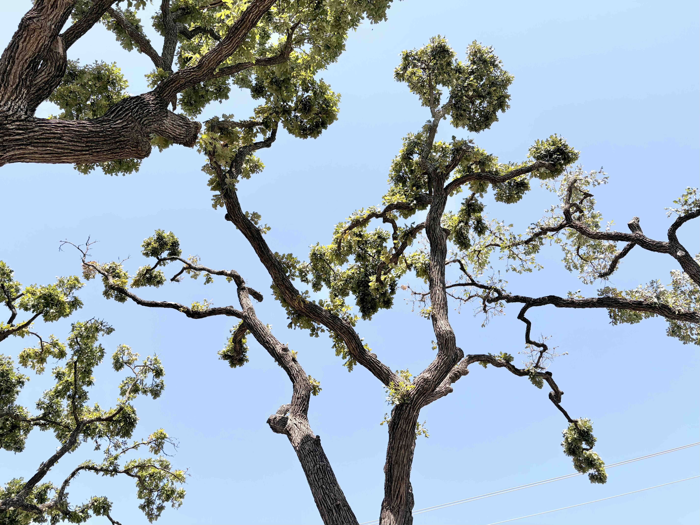
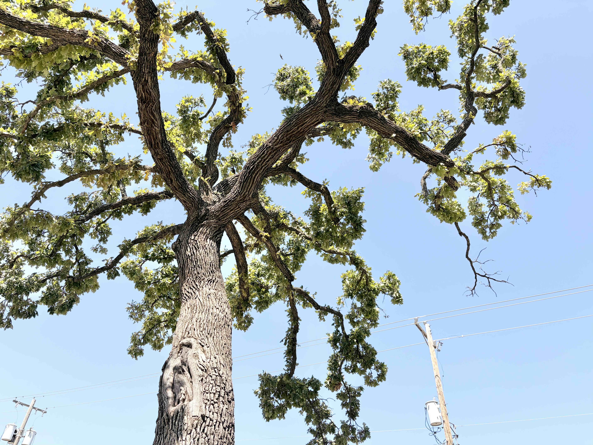
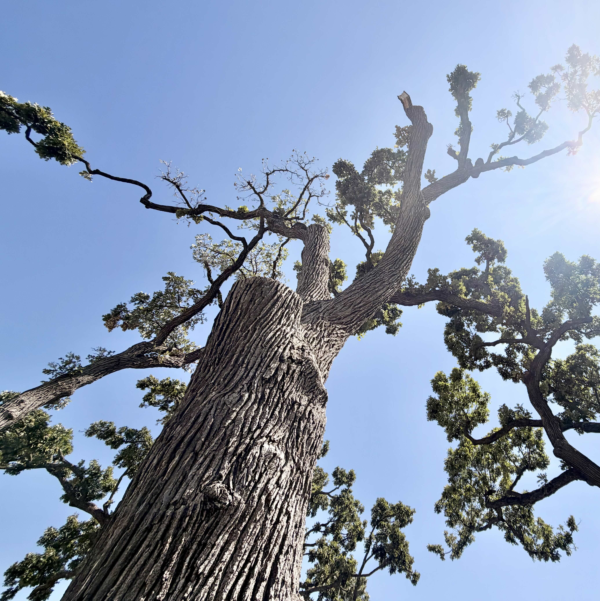
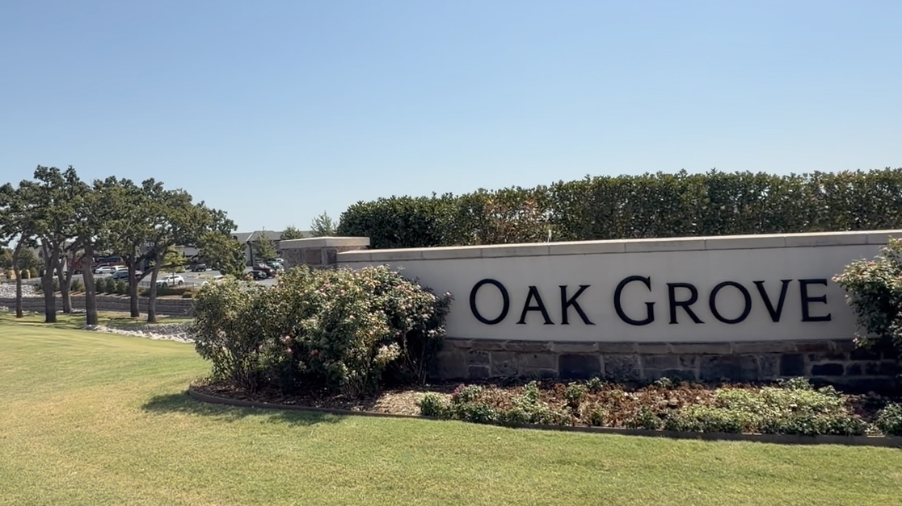
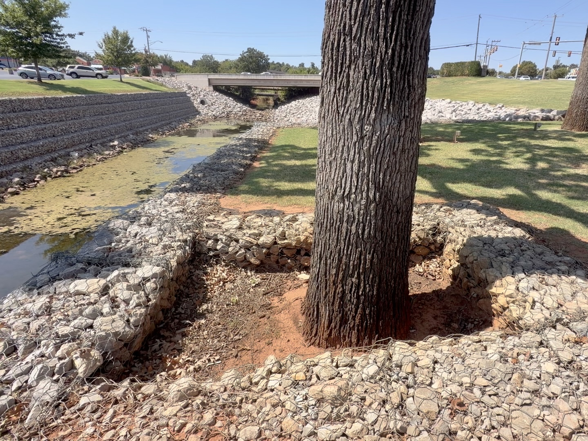

Outside Oklahoma City's Patience S. Latting Northwest Library stands a prominent row of mature oaks. Nearby, the entrance to the development announces its identity in large letters: Oak Grove.
The name fits. These are substantial old trees, survivors of Oklahoma wind, heat, drought, construction, changing drainage, and decades of human attention. They still cast broad shade across the site and give the area a character that could not be recreated quickly with replacement trees.
But stand beneath them and look upward. Something about the crowns feels unusual.
Many of the large scaffold limbs travel considerable distances with relatively little interior branching or foliage. Leaves are concentrated in tufts toward the ends of long limbs. Some portions of the crowns show dieback. Elsewhere, vigorous secondary growth has developed around an altered framework. Instead of the progressively branching architecture we expect from a mature oak, portions of these trees resemble long bare arms holding bouquets of foliage at their fingertips.
Their exact histories cannot be reconstructed from appearance alone. Storm loss, utility clearance, natural decline, previous failures, construction, and multiple generations of pruning may all have contributed. Still, much of the architecture is strongly characteristic of a pruning practice called lion's-tailing.
A pruning cut is not an endpoint. It changes what the tree has to become afterward.
What is lion's-tail pruning?
Lion's-tailing occurs when too many smaller lateral branches are removed from the interior of larger limbs while foliage and branches are retained primarily toward their ends.
The name is descriptive. Imagine a lion's tail: a long, relatively bare structure terminating in a tuft. Now look upward at a badly lion-tailed tree and the resemblance becomes easy to see.
It often happens while someone is trying to "thin," "open up," or "clean out" a tree. That distinction matters because selective thinning can be a legitimate pruning method when there is a clear objective. Lion's-tailing is what happens when thinning becomes excessive, poorly distributed, or repeatedly focused on the interior crown.

The result can look surprisingly attractive immediately after the work. The major limbs become visible. The crown looks open and airy. Sunlight penetrates through it. Individual branches become visually distinct. A complicated biological structure suddenly appears cleaner and more orderly.
There is also an unmistakable indication that work was performed. That may be part of the reason the practice persists.
A tree crown is not clutter
One of the easiest mistakes to make when looking at a mature tree is to interpret its architecture through human aesthetics.
We like clean lines. We edge sidewalks, mow lawns, shear hedges, arrange ornamental plants, and remove clutter from rooms. When that same instinct is applied to a mature oak, interior branches can begin to look unnecessary.
But the tree did not accidentally put all those branches in the middle.
A crown is a three-dimensional biological system assembled over decades. Leaves capture solar energy. Branches position those leaves in space. Wood supports them against gravity and wind. The vascular system transports water upward and carbohydrates throughout the organism. Branching architecture distributes mass and mechanical stress while continually changing in response to light, gravity, injury, and the surrounding environment.
A mature tree has effectively spent its entire life negotiating with physics and physiology. Pruning enters that negotiation.
Leaves are the tree's solar collectors
The most immediate consequence of removing live branches is simple: we remove leaves.
Leaves manufacture carbohydrates through photosynthesis. Those carbohydrates support respiration, growth, root function, defense, reproduction, storage, and the biological processes involved in responding to injury.
That does not mean every healthy branch should remain forever. Trees naturally lose branches, and appropriate pruning intentionally removes some living tissue. A vigorous tree can tolerate reasonable foliage removal quite well.
Nor are all leaves equally productive. A fully illuminated exterior leaf and a shade-adapted interior leaf operate under different light conditions. It would therefore be misleading to suggest that removing twenty percent of a crown always removes exactly twenty percent of its net carbohydrate production.
But the opposite assumption is also wrong. Interior foliage is not biologically useless simply because it receives less light.
When substantial portions of the living crown are removed, photosynthetic surface area is reduced at the same time that pruning wounds are created and the tree is being asked to reorganize its crown.
The tree does not simply remain as the arborist left it. It responds.
The pruning job continues after the crew leaves
This may be the most important concept in mature-tree pruning. A pruning job has a biological afterlife.
Trees redistribute growth in response to changing light, damage, hormonal relationships, available growing space, and the loss of branches. After severe pruning, surviving portions of the crown may respond with vigorous shoot development. Over subsequent years, those shoots become branches themselves. Some compete with one another. Some become increasingly important components of the crown. Some eventually require additional management.
Aggressive pruning can therefore create a cycle: over-prune, stimulate a vigorous response, dislike the resulting growth, then over-prune again.
Eventually the altered architecture can begin to look like that is simply how the tree grows. Often it is more accurate to see it as a long conversation between the tree and the people who have been pruning it.

The problem of long levers
Lion's-tailing also changes the mechanical architecture of branches.
Imagine holding a ten-pound weight against your chest. Now extend your arm horizontally while holding the same weight. The weight has not changed, but your shoulder certainly knows something has.
The difference is leverage. Increasing the distance between a load and the point supporting it increases the bending moment at that support.
Tree branches are much more complicated than rigid levers. They taper, bend, twist, oscillate, change orientation, carry dynamically moving foliage, and interact aerodynamically with the rest of the crown. Still, the lever analogy remains useful.
When a large scaffold retains branches and foliage throughout its length, both mass and aerodynamic surface are distributed along the structure. When interior laterals are repeatedly removed while growth remains concentrated farther out, the tree can be left with increasingly long limbs carrying substantial foliage near their extremities.
Taper matters too
A well-developed branch normally decreases in diameter along its length. Smaller lateral branches help influence how wood is allocated along the parent branch. Retaining appropriate laterals supports the natural development of taper and distributes growth along the scaffold rather than encouraging an increasingly bare beam with foliage at the end.

"But doesn't opening the tree let the wind through?"
This is where the discussion becomes more interesting than the usual internet argument.
A common justification for heavy thinning is that removing branches allows wind to pass through the crown, reducing storm damage. There is a grain of truth inside that idea. Removing foliage can reduce aerodynamic drag, and experimental pruning research has shown that some pruning treatments reduce measured wind forces.
So the useful question is not whether removing foliage can reduce aerodynamic load. Of course it can. The better question is: what foliage are we removing, from where, and what structure are we leaving behind?
Research comparing pruning treatments has highlighted the difference between merely reducing total crown area and changing where the remaining aerodynamic force acts. Crown reduction can reduce dimensions while bringing the outer crown closer to the supporting structure. Lion's-tailing can remove substantial foliage without producing that same structural advantage because much of the remaining foliage stays concentrated near the crown's extremities.
Less sail does not automatically mean a better sail plan.
There is another reason to be cautious about simplistic claims. A wind experiment performed immediately after pruning can measure the tree that exists that afternoon. It cannot directly reproduce ten or twenty years of altered branch development.
That distinction helps explain why conversations about lion's-tailing sometimes become confused. Immediate aerodynamic effects and long-term structural development are related, but they are not the same question.
A useful distinction
Pruning can reduce drag without improving every part of the structure
Modern pruning practice does not reject lion's-tailing because every removed interior twig somehow made the tree stronger. The concern is the overall architecture being created: excessive removal of interior laterals, poor foliage distribution, loss of functional crown, altered taper, distal loading, and the growth response that follows.
Good pruning is therefore objective-driven. Deadwood removal, clearance, structural pruning, selective reduction, and carefully chosen thinning cuts can all be appropriate. "Open it up" is not, by itself, a sufficient objective.
A tree creates its own shade
Mechanical structure is only part of the story. A mature crown also creates a microclimate.
Exterior leaves intercept intense solar radiation. Interior foliage exists in progressively filtered light. Branches shade other branches. The crown shades portions of the trunk and the ground beneath it. Transpiration dissipates absorbed solar energy through evaporation of water.
Stand beneath a mature oak on an Oklahoma afternoon and the effect is obvious. The tree is not merely occupying the environment. It is modifying the environment around itself.
Aggressively opening a crown changes that relationship. Bark and branches that developed under partial shade may suddenly receive much more direct solar radiation. Remaining foliage experiences a different combination of light, temperature, wind, and evaporative demand. More sunlight reaches the trunk, soil, turf, and hardscape below.
On susceptible trees, abrupt exposure of previously shaded bark can contribute to sunburn or sunscald injury. That does not mean every lion-tailed oak will develop sun injury. Species, bark thickness, orientation, season, previous acclimation, and local conditions all matter. The important point is that shade is not simply a visual consequence of having a dense crown. It is part of the tree's physical environment.
Heat and drought are not solved by simply removing leaves
This becomes especially relevant in Oklahoma, where mature trees routinely experience combinations of intense solar radiation, hot air, warm nights, drying wind, and periods of limited soil moisture.
It can sound reasonable to say that fewer leaves should help a drought-stressed tree because fewer leaves can mean less total transpiration. In isolation, reducing leaf area can reduce whole-tree water use.
But a tree is not a container of water with leaves acting as leaks.
Crown and roots are coupled. Leaves produce the carbohydrates that support roots. Roots supply the water needed for leaves to remain functional. Stomata regulate gas exchange. Stored carbohydrates provide resilience when current photosynthesis cannot meet demand. Crown architecture influences radiation and tissue temperature. The tree continually adjusts its physiology to its surroundings.
Heavy pruning changes several parts of that system simultaneously. It can reduce transpirational area while also reducing photosynthetic capacity, increasing solar exposure of previously protected tissues, altering crown temperature, and stimulating replacement growth.
That is why "remove foliage to help the tree through the heat" is usually too crude a prescription for a mature landscape tree. The better approach is to diagnose the actual limiting factor. It may be inadequate soil volume, compaction, disturbed roots, poor irrigation, excessive reflected heat, altered drainage, or an unusually demanding season.
Sometimes the crown is showing us the problem rather than causing it.

Why do people prune trees this way?
This question deserves more sympathy than it usually receives.
Lion's-tailing can look good, especially immediately afterward.
The architecture becomes dramatic. Large limbs emerge from what previously looked like a mass of foliage. The canopy appears lighter and cleaner. More sunlight reaches lawns and landscaping. Buildings become more visible. A customer can stand at the curb and immediately see that something happened.
That creates a peculiar economic problem in arboriculture.
Imagine spending several thousand dollars having mature trees professionally pruned. A crew works all day. Ropes fill the canopy. Branches come down. A chipper runs. Sawdust is cleaned from the pavement. Then you stand at the curb and think, "It barely looks different."
That can feel disappointing. Yet with excellent mature-tree pruning, it can also be a tremendous compliment.
The objective may be to remove deadwood, manage a particular defect, improve clearance, subordinate competing structure, reduce a specific load, or guide future development while preserving as much functional crown as practical.
Sometimes the best pruning is visually subtle.
Large piles of brush, dramatically exposed limbs, a brighter interior crown, and a result that immediately looks "worked on."
Specific objectives, carefully selected cuts, preservation of functional foliage, and a finished tree that may still look naturally full.
This creates tension between horticultural value and perceived consumer value. A dramatic transformation photographs beautifully. A carefully considered series of modest cuts may not.
So the temptation exists, for customer and contractor alike, to equate the quantity removed with the quality delivered.
More debris does not necessarily mean more arboriculture.
The difference between landscaping and arboriculture
Many landscape plants are intentionally maintained in artificial forms. We shear hedges. We shape topiary. We pollard some trees under appropriate management systems. We coppice plants. We train fruit trees.
There is nothing inherently wrong with imposing human objectives on plants. Horticulture has been doing so for thousands of years.
The mistake is applying the expectations of one management system to another.
A mature shade tree is not a giant shrub. Much of its value comes from size, crown volume, longevity, and architecture, the very characteristics aggressive pruning can diminish.
That does not mean aesthetics are irrelevant. Beautiful pruning is possible and worth pursuing. But the aesthetic objective should emerge from an understanding of the organism rather than from a desire to make every mature tree look uniformly clean.
We have a human preference for visual order. Trees have a biological requirement for functional architecture. Good arboriculture finds the place where those two can coexist.
The roots and site matter too
The story at Oak Grove is not confined to the canopy. Portions of the site show extensive drainage and retaining infrastructure immediately beside mature trunks. One oak stands within a highly engineered edge condition where stone-filled gabions and altered grades meet its root zone.
That does not, by itself, prove the tree is being harmed. It does remind us that mature-tree stewardship cannot stop at the first branch union. Roots, soil volume, grade, drainage, compaction, heat, and construction history all influence what happens above ground.

These trees are not ruined
Standing beneath the oaks at Oak Grove, I do not see worthless trees.
I see magnificent old organisms that have endured.
They still cast enormous shade. They still photosynthesize. They still intercept rainfall, moderate temperatures, store carbon, provide habitat, influence the landscape, and make this place recognizably different from a development built on an empty field.
They are still beautiful.
I also do not know the people who made the pruning decisions visible in these crowns. I do not know what conditions they faced, what storm damage preceded their work, what standards were common at the time, or what a customer asked them to accomplish.
Arboriculture continues to learn. So this is not an indictment of an unknown arborist. It is an opportunity to learn from the trees.
Trees keep records. A large pruning wound records an intervention. A change in branch orientation records a response. Deadwood records loss of function. Reiterated shoots record new investment. Trunk flare and roots record changes in the ground around them. Growth rings preserve favorable and unfavorable years inside the wood.
The longer a tree lives, the more biography it carries. These oaks happen to carry theirs where we can see it.
Stewardship means thinking ahead
Prune the future tree
Perhaps the most consequential change in how we think about pruning happens when we stop asking, "What should this tree look like when we are finished?" and begin asking, "What response are these cuts likely to produce?"
Instead of removing a branch simply because it looks awkward, we consider what will occupy that space afterward. Instead of maximizing light penetration, we ask how much functional crown needs to remain. Instead of indiscriminately thinning for wind, we identify actual structural concerns and choose pruning objectives appropriate to them.
A mature tree represents decades, sometimes centuries, of accumulated biological investment. Our saw may interact with that history for only a few hours. The consequences can remain for decades.
A good arborist is not only pruning the tree standing here today. We are pruning the tree somebody will stand underneath twenty years from now.
Further reading